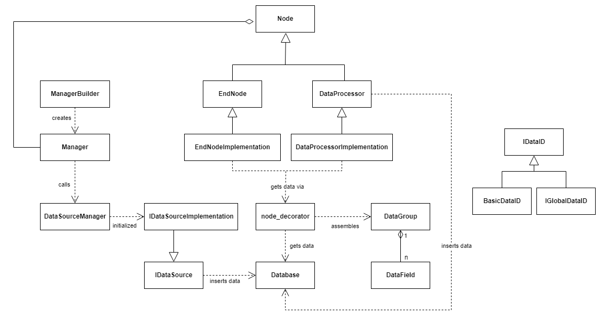
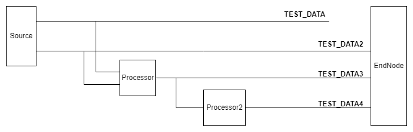
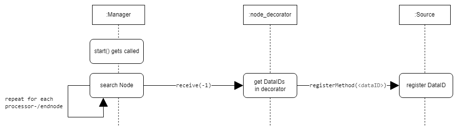
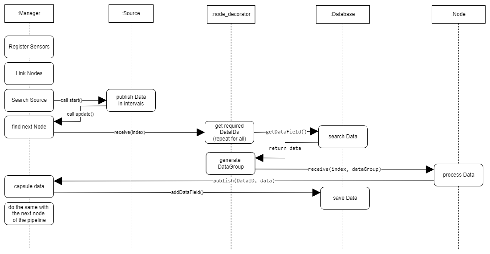

Architecture
Targets
The primary goals of the framework are:
- a unified project structure
- multithreading security
- compatibility
- Ensuring customizability
Objects and Classes

Basic datastream

Standard call sequences
Registration

Pipeline call
